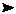
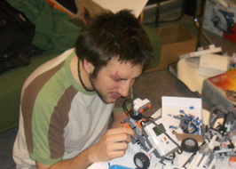

Quand les mathématiciens construisent des robots... En savoir plus...
Après 33
promotions de licenciés, la première promotion de
master de l'UMons

N'hésitez pas à nous poser des questions sur les
débouchés.
Étudier les Maths à l'Institut
- Portail des étudiants
- Inscription : tous les jours, pendant l'été, jusqu'au 12 septembre de 9h à 12h et de 14h à 16h
- Décret dit de Bologne, système BMD, Nouveaux Programmes: Baccalauréat, Maîtrise...
- Les Finalités: « Math-informatique », « Math-finance », Math pour l'enseignement, Math pour la recherche
- Notes de cours
- Débouchés: mathématique, métiers de la recherche, métiers de la finance, métiers de l'informatique, métiers de l'enseignement
- Équivalences du BMD avec le LMD, CAPES... (diplômes français)
- Page des étudiants étrangers (inscription)
- Autres cursus en Faculté des Sciences
La recherche
- Équipes de recherche
- Prépublications
- Évènements (colloques, conférences et autres)
- Ça a eu lieu...
Les interfaces de l'Institut
- Avec le secondaire, les anciens, les entreprises. Nos activités désormais préannoncées sur le site du CDS
- La page du Conseil de l'Institut de Mathématique de l'UMH
Divers
- Annuaire
- Institut d'Informatique
- Le site de la Belgian Mathematical Society.
- La page du club d'Astronomie
- Départements de mathématique : ULB, UCL, FUNDP, ULG.
Vous voulez être maintenu au courant de nos activités ? Écrivez-nous à math@umons.ac.be.
Veuillez envoyer vos commentaires ou corrections à Christian Michaux ou Cédric Rivière.